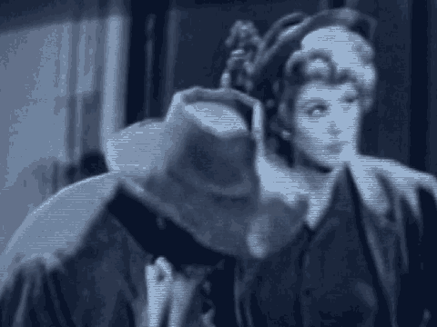

1 to meet with Mr. Salim under the conditions you described in
2 the recreation room, that is, without any restraints being
3 placed on Mr. Salim.
4 A. Yes.
5 Q. And in fact, on the morning of November 1, did you suggest
6 that after you met in the computer room you move to the
7 recreation room where it was more open?
8 A. Yes.
9 Q. I would like to talk a little bit more about November 1.
10 When your client left the room with Officer Pepe, you
11 testified, I believe, that he was carrying that folder with
12 his materials inside; is that correct?
13 A. He was carrying the folder. I assume it had his materials
14 inside.
15 Q. You didn't see any materials left in the room?
16 A. There might have been CDs left in the room. I don't
17 recall specifically.
18 Q. But he definitely took the -- was it a Redwell file?
19 A. Yes.
20 Q. And he took that with him when he walked away with Officer
21 Pepe?
22 A. Yes.
23 Q. You mentioned that after a certain time after the officers
24 entered 10 South, you saw a body you believed was your client
25 being brought around to the front of the 10 South unit.
8305
1 A. Yes.
2 Q. Before that time, did officers or other staff enter that
3 section of the unit and check the doors?
4 A. Yes.
5 Q. You testified when you see this person being dragged on
6 the floor --
7 A. Excuse me. I am sorry, but I think I have to correct
8 that. There was a time, there were many times when officers
9 checked, pulled on our door, and I saw them pull on other
10 doors and I heard them pull on yet others, but I cannot say
11 for certain whether that was before or after I first saw
12 Mr. Salim being dragged to that area.
13 MR. GARCIA: If I may have a moment, your Honor.
14 Q. Mr. Adler, after this day, November 1, did there come a
15 time that you again visited Mr. Salim before you were
16 relieved?
17 A. Yes.
18 Q. Do you remember approximately when that day was?
19 A. Within a day or two.
20 Q. Did you observe any injuries --
21 A. Maybe it was three or four, but within that period.
22 Q. Did you observe any injuries to Mr. Salim's face or eyes
23 that would have been consistent with the blow you described?
24 A. No, I didn't.
25 Q. In fact, at that time did you come to doubt that it was
8306
1 your client who had been on the floor in front of your cell?
2 A. I had doubts because I didn't see injuries consistent with
3 what I had seen before, yes.
4 MR. GARCIA: I have nothing further.
5 MR. RUHNKE: Nothing further, your Honor.
6 THE COURT: Thank you. You may step down.
7 (Witness excused)
8 THE COURT: Defendant may call its next witness.
9 MR. RUHNKE: Special Agent Jason Randazzo, who I hope
10 is in the back.
11 JASON RANDAZZO,
12 called as a witness by the defense,
13 having been duly sworn, testified as follows:
14 DIRECT EXAMINATION
15 BY MR. STERN:
16 Q. Good morning, Agent Randazzo.
17 A. Good morning.
18 Q. How are you employed, sir?
19 A. I am a special agent of the Federal Bureau of
20 Investigation.
21 Q. How long have you been employed by the Federal Bureau of
22 Investigation?
23 A. Eleven years.
24 Q. What kind of work specifically do you do with them?
25 A. My primary work, I work on a squad that investigates
8307
1 crimes that occur on government property.
2 Q. Did you investigate such a crime on November 1 of the year
3 2000?
4 A. Yes, I did.
5 Q. Where did that crime take place?
6 A. The crime took place at the Metropolitan Correctional
7 Center.
8 Q. As part of your investigation of that crime, did you
9 interview people who may have been witnesses in connection
10 with it?
11 A. Yes, I did.
12 Q. Do you recall interviewing a person named Elise Santulli?
13 A. Yes, I do.
14 Q. Did Miss Santulli have contact with a victim of an assault
15 named Louis Pepe?
16 A. Yes, she had had constant contact with him, yes.
17 Q. Did you ask Miss Santulli whether or not Mr. Pepe had made
18 any statements in connection with the incident which had
19 occurred?
1